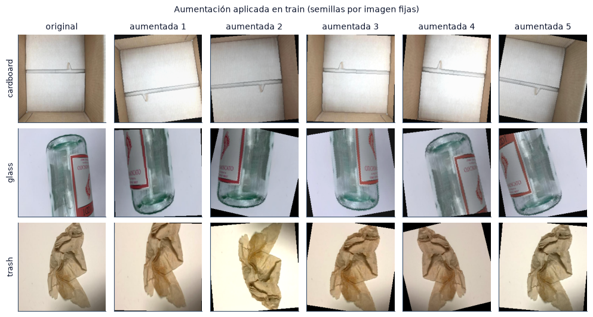

4.2 Partición y preprocesamiento#
En esta sección cargamos la partición definida en el análisis exploratorio, verificamos la ausencia de fuga de información y calculamos con el conjunto de entrenamiento las estadísticas de normalización y los pesos de clase.
import sys
from pathlib import Path
ROOT = next(p for p in [Path.cwd(), *Path.cwd().parents] if (p / "src" / "config.py").exists())
if str(ROOT) not in sys.path:
sys.path.insert(0, str(ROOT))
import numpy as np
import pandas as pd
import matplotlib.pyplot as plt
from IPython.display import Markdown, display
from src import config as C
from src import plots as P
from src.persist import is_done, load_pickle, save_pickle
P.setup()
C.ensure_dirs()
pd.set_option("display.precision", 4)
print("Resultados:", C.RESULTS.name, "| modelos:", ", ".join(C.MODELS))
Resultados: results | modelos: CNN, MobileNetV2, ResNet-18
Partición#
Usamos la partición de la sección 2.4: sin las 6 imágenes con etiqueta contradictoria, con los casi-duplicados agrupados y cada grupo asignado completo a una sola partición, en proporción 5:1:1 (≈ 71/14/14 %). Antes de cada corrida se verifica la huella SHA-256 del conjunto de prueba.
La selección de hiperparámetros usa una partición fija de validación. La validación cruzada anidada multiplicaría el costo computacional por el número de pliegues y no fue viable con los recursos disponibles; en consecuencia, la configuración elegida puede ajustarse en parte a las 360 imágenes de validación.
from src.data import prepare_common
common = prepare_common()
sp, norm, cw = common["splits"], common["norm"], common["class_weights"]
conteos = pd.DataFrame({s: np.bincount(sp[s]["y"], minlength=C.NUM_CLASSES) for s in ("train", "val", "test")},
index=C.CLASSES)
conteos["total"] = conteos.sum(axis=1)
conteos.loc["total"] = conteos.sum()
proporcion = (conteos.iloc[:-1, :3] / conteos.iloc[:-1, :3].sum() * 100).round(1)
display(conteos)
display(proporcion.rename(columns=lambda c: f"{c} (%)"))
| train | val | test | total | |
|---|---|---|---|---|
| cardboard | 287 | 58 | 58 | 403 |
| glass | 355 | 71 | 72 | 498 |
| metal | 292 | 59 | 58 | 409 |
| paper | 424 | 85 | 85 | 594 |
| plastic | 343 | 68 | 69 | 480 |
| trash | 99 | 19 | 19 | 137 |
| total | 1800 | 360 | 361 | 2521 |
| train (%) | val (%) | test (%) | |
|---|---|---|---|
| cardboard | 15.9 | 16.1 | 16.1 |
| glass | 19.7 | 19.7 | 19.9 |
| metal | 16.2 | 16.4 | 16.1 |
| paper | 23.6 | 23.6 | 23.5 |
| plastic | 19.1 | 18.9 | 19.1 |
| trash | 5.5 | 5.3 | 5.3 |
pares = [("train", "val"), ("train", "test"), ("val", "test")]
verif = pd.DataFrame({
"archivos idénticos (SHA-256) compartidos": [len(set(sp[a]["sha256"]) & set(sp[b]["sha256"])) for a, b in pares],
"grupos de casi-duplicados compartidos": [len(set(sp[a]["group"]) & set(sp[b]["group"])) for a, b in pares],
}, index=[f"{a} / {b}" for a, b in pares])
display(verif)
assert verif.to_numpy().sum() == 0, "Hay solapamiento entre particiones"
print("Huella del test:", sp["test_fingerprint"][:16], "... coincide con la registrada en el EDA")
| archivos idénticos (SHA-256) compartidos | grupos de casi-duplicados compartidos | |
|---|---|---|
| train / val | 0 | 0 |
| train / test | 0 | 0 |
| val / test | 0 | 0 |
Huella del test: 4e4651dc5c8bbbfc ... coincide con la registrada en el EDA
Redimensionamiento y normalización#
Redimensionamos las imágenes de 512×384 a 224×224 con interpolación bicúbica. Descartamos el letterbox (relleno hasta un cuadrado) porque añade franjas que actuarían como fondo artificial, y el fondo ya está asociado a la clase (sección 2.7). La deformación de 4:3 a 1:1 es la misma para todas las imágenes y para los tres modelos.
Calculamos la media y la desviación estándar por canal con el conjunto de entrenamiento redimensionado y las comparamos con las obtenidas a resolución original.
import json
eda = json.loads((ROOT / "data" / "splits" / "norm_stats_v2_s1234.json").read_text(encoding="utf-8"))
tabla_norm = pd.DataFrame({"media 512×384 (EDA)": eda["mean"], "DE 512×384 (EDA)": eda["std"],
"media 224×224": norm["mean"], "DE 224×224": norm["std"]}, index=["R", "G", "B"])
display(tabla_norm)
| media 512×384 (EDA) | DE 512×384 (EDA) | media 224×224 | DE 224×224 | |
|---|---|---|---|---|
| R | 0.6718 | 0.2105 | 0.6718 | 0.2091 |
| G | 0.6380 | 0.2107 | 0.6380 | 0.2093 |
| B | 0.6022 | 0.2322 | 0.6022 | 0.2309 |
Pesos de clase#
La pérdida es la entropía cruzada ponderada, \(\mathcal L = -\sum_i w_{y_i}\log p(y_i\mid x_i) / \sum_i w_{y_i}\), con \(w_k = N/(K\,n_k)\) calculado en entrenamiento. El promedio de los pesos es 1; una imagen de trash pesa unas cuatro veces más que una de paper.
tabla_pesos = pd.DataFrame({"imágenes en train": cw["counts_train"], "peso w_k": np.round(cw["weights"], 3)},
index=C.CLASSES)
display(tabla_pesos)
| imágenes en train | peso w_k | |
|---|---|---|
| cardboard | 287 | 1.045 |
| glass | 355 | 0.845 |
| metal | 292 | 1.027 |
| paper | 424 | 0.708 |
| plastic | 343 | 0.875 |
| trash | 99 | 3.030 |
Aumento de datos#
En entrenamiento aplicamos transformaciones que preservan la etiqueta: RandomResizedCrop(224, scale=(0.7, 1.0)), volteos horizontal y vertical, RandomRotation(15) y ColorJitter(0.2, 0.2, 0.2, 0.02). La variación de brillo, contraste, saturación y tono responde al atajo de iluminación identificado en la sección 2.7; el recorte modifica la proporción de fondo visible. En validación y prueba solo se normaliza.

Conclusión#
La partición no presenta archivos ni grupos de casi-duplicados compartidos entre entrenamiento, validación y prueba. La normalización y los pesos de clase se calcularon solo con entrenamiento. Las estadísticas a 224×224 son casi iguales a las de resolución original, con una desviación estándar ligeramente menor por el suavizado del redimensionamiento.